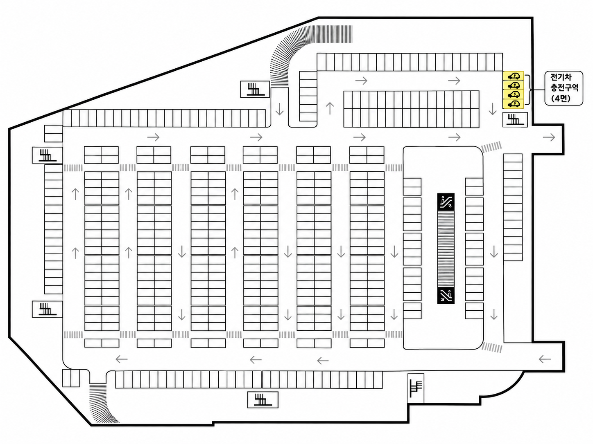

차량 등록
이 페이지는 차량 등록과 위치 확인 기능을 시뮬레이션합니다. 실제 신세계포인트 계정·주차 정산 시스템에는 연결되지 않습니다.
차량 등록 바로가기이용 안내
- 차량번호가 등록돼 있어야 쇼핑 후 결제 시 결제금액에 따른 무료주차 시간이 자동 계산되어 제공됩니다.
- 등록된 차량번호로 입차하고, 결제 시 신세계포인트를 적립해야 주차비 자동정산이 가능합니다.
- 차량번호가 등록돼 있어야 매월 2시간 주차권 제공 및 사용이 가능합니다.
- 2시간 주차권의 무료주차 가능 시간은 최대 2시간으로, 초과 주차 시 요금이 부과됩니다.
- 주차권은 출차 5분 전에 사용하여 정산해 주시기 바랍니다.
- 주차권은 영업시간 내 1일 1매만 사용 가능합니다.
- 다른 주차권 또는 구매 영수증과 합산 가능합니다(최대 5시간까지 적용).
- 차량번호 등록은 1인 1대에 한합니다.
무료주차 시간 안내
- 당일 1/3/5/10만원 이상 구매 시, 2/3/4/5시간 무료주차 이용이 가능합니다.
- 무료주차 가능 시간은 2시간 주차권 합산 포함 최대 5시간이며, 5시간 초과 주차 시 추가요금이 부과됩니다.
- 일부 점포는 무료주차 적용 기준이 상이할 수 있으므로 방문 점포 안내를 확인합니다.
무료주차 가능 점포
주차비 자동정산 서비스 및 주차권 사용은 일부 점포에서만 가능합니다.
대상 점포 확인하기 (이마트 및 이마트 트레이더스)주차요금
- 기본요금 10분당 1,000원.
- 30분 이내 회차 시 무료 ※강릉점 제외.
- 구매 영수증(종이, 모바일) 바코드 또는 꼬리표상 바코드로도 주차비 정산 가능.
내 차량 위치 확인
프로토타입에서는 등록 차량과 주차면을 연결해 위치를 시뮬레이션합니다.
등록 차량
123가4567
저장된 위치
4층 · 지정 주차면 (시뮬레이션)

●
4층 실제 도면에서 주차장 영역만 추출
차량 등록 후 지정된 주차면에 차량 위치가 자동으로 표시됩니다. 차량 위치는 시뮬레이션용으로 고정되어 있습니다.
등록된 차량이 없습니다
차량 등록 바로가기로 차량번호를 저장하면 주차장 도면과 위치 확인 영역이 나타납니다.